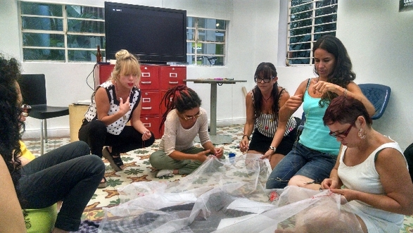

Surge de la necesidad de investigar sobre lo femenino, por lo tanto se hacen periódicamente: work shops, escuela de calor, circulo de mujeres, laboratorio de performance, aquelarre, flash mob, ritual, etc. Usando para el encuentro sitios diversos como cafés: Café & kink, Casa Café, espacios culturales: Casa Mata, Lugar a dudas, Casa Fractal, Urbanarte, etc. 
Es una investigación que se lleva a cabo paralela a la vida, en la que el cuerpo en sus diversas formas y expresiones es la fuente de conocimiento.
Con la especialización en Dramaturgia de la Universidad de Antioquia, el Ministerio de Cultura y Bellas Artes Cali, se hace un trabajo de inmersión en una comunidad de jóvenes artistas para contextualizarlos en el devenir del arte y situarlos en las dinámicas del arte expandido y así producir desde sus propias vivencias obras en diversos formatos: texto, narración, instalación, performance y/o puesta en escena.